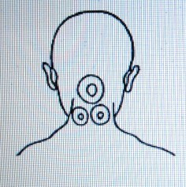
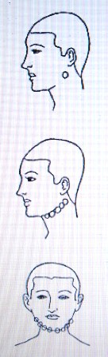

病気の分析 ３ 歯・舌・のど・顔面・口内の病気・癲癇（岡田先生療病術講義録より）
上体の下部
歯疾患
明主様御講義 「歯
痛」 （昭和11年7月）
「歯痛の原因としては・・・
（一）は、歯根膜炎で、「歯の根」に膿が溜るもの。
（二）は、歯神経の痛むもの・・・との二種であります。
本療法で、非常によく治るんであります。
歯痛を治療する場合は・・・
まず最初に「上歯が痛むか、下歯が痛むか」を訊（き）き、その部を外から治療するのであります。
これは、水膿が「歯の根」へ集溜する。その膿が外部へ排泄されようとして骨膜を穿孔（せんこう）する。それが「激痛」なのであります。
故に、穿孔されれば痛みは軽減しますが、膿が外部へ出た為に「頬が脹れる」のであります。
治
療
本療法を施せば速かに治るので、しかも根本的であります。
触るると痛い場合は、触れなくとも治ります。触れるか触れぬか位にして擦（さす）り、そうして吹けばよい・・・それで実によく治るのであります。
もう一つの歯神経の痛むのは・・・
歯に腐蝕が出来た為に、神経が露出する。それへ冷水や湯茶等が参みて痛むのであります。これは歯医者へ行って神経を殺してもらうのが一番速く治るのであります。
よく歯がグラグラして、抜こうかどうしようかと迷う人がありますが、それは歯の根に膿が溜っているので、浄化すれば、根が締って治るのであります。」 （「岡田先生療病術講義録 下巻２」より）
明主様御講義 「歯槽膿漏」 （昭和11年7月）
「これは、歯根から血膿が出るのですから・・・「軽い歯槽膿漏」は誰でもある訳であります。
これも右か左か、どっちかが余計出るものであります。
世間では恐るべき病気とされており、中には「梅毒」だなどというのもありますが、そんな事はないのであります。
上顎か下顎の辺を外部からおしてみると、痛い所があるので、そこに水膿や汚血が溜結しているから・・・そこを浄化すると共に、
頸腺部等又は顔面特に頬の辺に痛む個所が必ずあるもので、その個所を浄化すれば、水膿は溶けて治るのであります。
治療は、普通二、三週間、重症で一、二ケ月を要します。」 （「岡田先生療病術講義録 下巻２」より）
舌 病
明主様御講義 「吃
音（どもり）」 （昭和11年7月）
「吃音（どもり）は・・・
「生来の吃」と「中風その他の為に呂律の廻らない」のとありますが・・・いずれも舌の運転が意志通りにならぬものであります。
後天的の方は・・・顎の下の所を見ると、図のごとく塊があります。それを圧すと痛い。

これが原因でありますから、それを溶かすと治るのであります。
先天性吃の人は「後頭部」によく固結があります。この原因が多いのであります。
この図のごとき位置に、普通一個あるものであります。

これを治療して溶せばいいのでありますが、病が治っても、習慣がありますので、全治するまでには相当時日を要するのであります。
バセドー氏病の為、喉の方へ膿が移行して舌の廻らなくなる事がありますが、同じ事であります。」 （「岡田先生療病術講義録 下巻２」より）
明主様御講義 「舌
癌」 （昭和11年7月）
「これは最初、顎下腺に水膿が溜結して段々に深部へ移行し、ついに舌根を犯すのであります。
この病気は、舌を動かせば痛み、物を食べると滲みる。なかなか苦痛であります。
この病気の手術の結果は、面白くないようであります。手術をすれば、縫う為に舌はとても吊るのであります。
又、ラジュウム療法をよく行いますが、これは・・・固めるから癌は縮小しますが、舌はよけいに吊るようであります。
本療法によれば、手術を受けない患者なら必ず治癒するのであります。」 （「岡田先生療病術講義録 下巻２」より）

咽喉疾患
明主様御講義 「アデノイド」 （昭和11年7月）
「これは、鼻と喉の間に「腫物」が出来る。
これは外の方から、鼻と喉の間あたりの見当をつけて治療すれば治ります。
ほとんど子供の病気ですが、うっちゃっておいても成人するに従い治るのであります。」 （「岡田先生療病術講義録 下巻２」より）
明主様御講義 「扁桃腺炎」 （昭和11年7月）
「扁桃腺は、外の方から指触すれば直に腫が判るので、診査は極容易であります。
よくルゴールという薬で焼くがこれは面白くないようです。
この療法は、私も昔随分やられましたが、反って長びいて慢性になりやすいのであります。
焼く為に一週間も二週間もかかります。
私は焼かなくなってから二、三日で治るようになったのであります。」 （「岡田先生療病術講義録 下巻２」より）
明主様御講義 「扁桃腺肥大症」 （昭和11年7月）
「扁桃腺炎の起った時に解熱法を行う。
その為に膿が固結するのであります。
これは最初の項目で詳説してあるから略します。
「耳下腺炎」も「淋巴腺炎」も前同断ですから略します。
頸部付近に水膿溜結の場合、解熱したり、電気をかけたりすると固まってしまうので、その為又隣部へ出来て段々殖える事がよくあるのであります。
最初一個所脹れた場合に、放置しておけば、その一個所へ膿が集溜し、充分脹れてついにブラ下る位になって、そして小さな孔があいて、膿が出て綺麗に治るんであります。

以前、私が扱った患者でこういうのがありました。
最初耳下腺付近に脹が出来たので、盛んに氷で冷した。
すると、その部分は脹れ切れずに固まったので、病院へ入院した。
すると今度は、反対の側の方へも腫が出来た。
それをも氷で冷し、次々出来ては氷冷して、次から次へ出来た腫物を悉（ことごと）く固めてしまった。
するとその為に膿がその部へ集溜されなくなるから、段々下の方へ溜るようになって、ついに肺気腫が起りそうになったのであります。
医師は驚いて、生命が危険だというので、切開して膿を出したが、それも一時小康を得ただけで今度は、外部へ集溜されなくなった膿は、止むなく内部・・・即ち口内から咽喉部へ溜って、ついに咽喉が塞がり、呼吸困難になって死んだのであります。
死の一ケ月ばかり前に私の所へ来たのでありますが、私の方でいくら溶いても「氷で固めてある為」と「衰弱の為」に浄化力が起らないので、どうする事も出来なかったのでありました。
この患者など、最初から何ら手当をせず、放任しておいたなら、順調に治って生命を完うしたろうに・・・と思って実に残念で堪らないと思ったのであります。」 （「岡田先生療病術講義録 下巻２」より）
明主様御講義 「喉頭結核」 （昭和11年7月）
「この病気は声を使う人に多いので、最初、顎下腺から扁桃腺付近に膿が溜り、漸次深部へ拡大し、咽喉部にまで移行するので、その為に声が変れるのであります。
段々進むに従って、食物をのむのにも困難になり、水も飲めなくなって、衰弱してたおれるのであります。
ちょうど喉へおデキが出来て、そして、その「おデキ」の頭へ物が触れるように痛むのであります。
これは本療法によれば順調に治ります。
しかし余り衰弱し過ぎているのは困難ですが、「歩ける位の程度」だったら必ず治るんであります。
軽症で一ケ月、重症で三ケ月位で全治致します。」 （「岡田先生療病術講義録 下巻２」より）
明主様御講義 「声嗄れ」 （昭和11年7月）
「喉頭結核でなくて、声の嗄れてる人がよくありますが、これは「喉頭結核の手前」位のものです。
これは、耳下腺から淋巴腺付近に溜結している毒素が溶けて、常に滲み出て、発声器能を刺戟する為、腫れて運動不能になるからで・・・
これは、それを溶解する事によって、容易に治るのであります。
軽症で二週間位、重症で一ケ月位であります。」 （「岡田先生療病術講義録 下巻２」より）
明主様御講義 「喉頭癌」 （昭和11年7月）
「これは、水膿溜結の頑固性のもので・・・
外部から指頭で触れば、扁桃腺のごとく明瞭に判るのであります。
そうして、順調に治癒するのであります。
軽症で二、三週間、重症で一、二ケ月位かかります。
喉頭癌と喉頭結核との区別は・・・
結核の方は喉全体に渡りますが、癌の方は一局部に出来る固結であります。」 （「岡田先生療病術講義録 下巻２」より）
明主様御講義 「バセドー氏病」 （昭和11年7月）
「喉の下に「甲状腺」というのがある。そこへ水膿が溜結するので・・・
一見、喉の中央が出張っているのであります。
又この病気の人は、全体的に見ても喉が太いのであります。
普通、甲状腺が脹れる・・・といいますが、私の観るところでは・・・甲状腺の外部に水膿が溜結するのであります。
バセドーという人が発見した病気ですが、病が進むと眼が飛出るのが特徴で「眼の大きい人」に多いようであります。
そうして、悪化すると心臓を頗（すこぶ）る悪くする。
その結果「脈縛不整」又は結滞（けったい）を来すのであります。
普通は、治りいい病気であります。
「妊娠すると危険だ」・・・といって、人工流産させますが、私の経験上、そんな憂はないと思うのであります。」 （「岡田先生療病術講義録 下巻２」より）
（イラスト・図省略）
明主様御講義 「水
癌」 （昭和11年7月）
「これは実に恐ろしい病気ですが、滅多にない病気であります。
最初は、口辺に黒い物がプッと出来、迅速に悪化して孔（あな）があき、頬の肉が、大きいのは鶏卵大にも欠除してしまうので、その結果、口中全部が露出する。
歯や舌など全部見えるのであります。

実に物凄く正視出来ない位で、横からみますと、上図のようになります。」 （「岡田先生療病術講義録 下巻２」より）
明主様御講義 「面
疔」 （昭和11年7月）
「顔面の一部に腫物が出来るんですが、よく「顔の経（たて）の中心」に出来るのが質が悪いとしてあります。
又、口の無いのも悪いといいますが、これはそうではない。
最初は口の無いのが普通で、腫れ切ってから口が出来るんであります。
面疔（めんちょう）は必ず治るもので・・・よく面疔で死にますが、これは不思議と思うのであります。
まず、顔の一部に面疔が出来ると・・・
自然療法ですと、段々腫れて、口が出来て膿が排泄されて治るんであります。
ところが、近来それを冷すので、その為に浄化作用が停止されて固まってしまう。
それ故、膿が他の方面に集溜する。その集溜個所によって『危険性』となるのです。
又もう一つは、早期に切開するのが、結果がわるいようであります。
熟練な医者は熟するのを待って切開しますが、これは非常に結果がよいのであります。
本療法によれば、一回ないし三回位で完全に治ります。
生命に係わるような事は絶対ないのであります。」 （「岡田先生療病術講義録 下巻２」より）
明主様御講義 「丹
毒」 （昭和11年7月）
「これもよくある病気ですが、これは床屋へ行って、剃刀で傷つき、そこから黴菌が入って起るとされております。
無論そういう事もあるでしょうし、そうでない事もあるでありましょう。
やはり浄化作用の為「特殊の毒素」がそういう機会によって誘発され、排除されるのであります。
この病気は、最初顔が脹れる。ひどくなると身体の方まで脹れ、なお進むと睾丸まで脹れる事があります。又高熱の為衰弱するのであります。
衰弱をしない内、本療法を行えば訳なく治ります。
半身位まで脹れた時ならば五、六回、顔だけが脹れた程度なら二、三回位で治ります。」 （「岡田先生療病術講義録 下巻２」より）
明主様御講義 「口
疹」 （昭和11年7月）
「これは、患部と口中の浄化をすれば、容易に治るのであります。
しかし軽症なら一週間以内に治りますが、重症となると二、三ケ月位かかる事があります。」 （「岡田先生療病術講義録 下巻２」より）
明主様御講義 「口内疹」 （昭和11年7月）
「これは口内の粘膜に発疹が出来て非常に痛む、そして喉の方まで来ると食物も嚥（の）めなくなります。
子供に多い病気で水さえ飲めなくなります。
これは治療すればすぐに治るのであります。治療は二、三回であります。」 （「岡田先生療病術講義録 下巻２」より）
明主様御講義 「癲
癇」 （昭和11年7月）
「癲癇（てんかん）には二種類あって、体的と霊的とあります。
まず体的原因からお話致しましょう。
延髄付近に水膿溜結する為、脳へ送流される血液が阻止される。
それが強烈な場合、血液が中断される事がある。
その瞬間癲癇症状を起すのであります。
この症状は、膿結溶解によって容易に治癒するのであります。
今一つは霊的の場合で、こちらがはるかに多い事と悪質であります。
霊的の原因は「死霊」が憑依するので、「死の時の苦悩の状態」そのままを表わすのであります。多くは変死又は急死であります。
脳溢血での死霊は、特に多いのであります。
発作が起ると「脳溢血でたおれる状態」そのままをする。
それは・・・脳溢血などで急死した霊は「死の準備」がないから「自分がいつまでも現世に在るつもりの想念」でいる。
その為、生きた肉体を見付けて憑依するのであります。
たおれて泡を吹くのは「水癲癇」で、「水死した死霊」が憑るのであります。
又よく水を見てたおれるのがありますが、これは「水へ落ちて溺れた死霊」が憑くのです。
死の刹那「アア水は恐ろしい」という想念がこびり着いているから、水をみると恐れるのであります。
又「火癲癇」というのは、火を見て恐れる。以前扱った癲癇で、こういうのがありました。
それは必ず夜中に寝ている時に発作する。起きてる時は決してない。
それは最初火が燃えるのが見え、段々近くへ燃えてくると、意識が無くなるのであります。
これは、震災直後であったから、多分震災で焼け死んだ病人の霊に違いないと思いました。
以前こういうのがあった。それは一、二分間パッと意識が不明になるのであります。
（その人は株式仲買の支配人をやっている人ですが）
最初一年に一遍位起っていたものが、段々重くなって、ついには一月に一、二回位おこるようになった。
又極度に発作を恐れる為に一種の神経衰弱になってしまったのであります。
査べてみると、その人に憑いているのは、昔千住の小塚原で闇打（やみうち）に遇って殺された霊で、無縁になっていた為祀ってもらいたいというのであった。
最初病気が起ったのが九月の何日でしたか・・・ちょうどその日に死んだのであります。
その為断えず闇打に遇うような恐怖に襲われるので一人歩きは出来なかった位であります。
半年位治療する内、段々軽快に向い、その死霊を祀ってやったら、それっきり治ったのであります。
癲癇の治療を始めると、一時は反って余計に発作し、それがある期間過ぎると、段々治るのであります。
大体において、時日は長くかかりますが、治るのであります。」 （「岡田先生療病術講義録 下巻２」より）